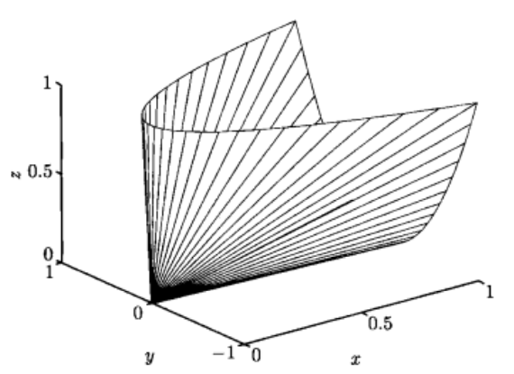

凸优化7：半正定锥
半正定锥(the positive semidefinite cone)
使用记号$\mathbf{S}^n$表示对称$n\times n$矩阵的集合，也即$\mathbf{S}^n=\{X\in\mathbf{R}^n|X=X^T\}$
这可以看成是一个维数为$n(n+1)/2$的向量空间。使用$\mathbf{S}^n_+$表示对称半正定矩阵的集合，$\mathbf{S}_+^n=\{X\in\mathbf{S}^n|X\succeq 0\}$。使用$\mathbf{S}^n_{++}$表示对称正定矩阵的集合$\mathbf{S}^n_{++}=\{X\in\mathbf{S}^n|X\succ0\}$
集合$\mathbf{S}^n_+$是一个凸锥：如果$\theta_1,\theta_2\geq0$，并且$A,B\in \mathbf{S}^n_+$，那么$\theta_1A+\theta_2B\in\mathbf{S}^n_+$ 。由半正定矩阵的定义可知：$\forall x\in \mathbf{R}^n$，如果$A\succeq0,B\succeq0$并且$\theta_1,\theta_2\geq0$，那么$x^T(\theta_1A+\theta_2B)x=\theta_1x^TAx+\theta_2x^TBx\geq0$
举个例子，对于$\mathbf{S}^2$上的半定锥
$X=\begin{bmatrix}x & y\\ y& z\end{bmatrix}\in\mathbf{S}_+^2\Leftrightarrow\quad x\geq0,z\geq0,xz\geq y^2$
下面的图显示了这个锥的边界
